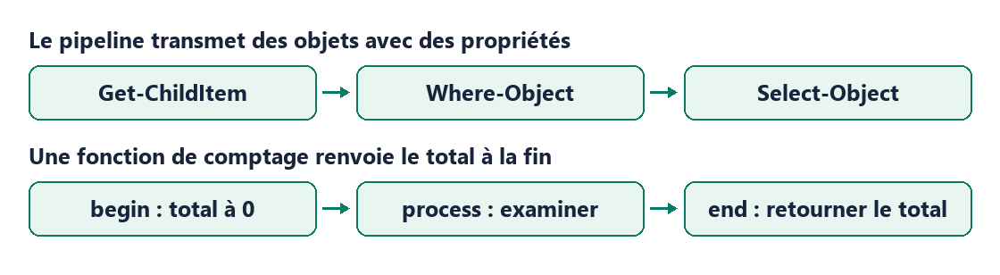

Comprendre le cours
1. Lire une commande dans la console
PowerShell est un interpréteur de commandes et un langage de scripts. Dans une cmdlet comme Get-ChildItem, le verbe Get indique qu’on récupère une information, et ChildItem désigne les éléments contenus dans un dossier. Les paramètres précisent l’emplacement, le filtre ou le type de résultat attendu.
Get-Command cherche dans les commandes disponibles. Get-Help Get-ChildItem -Examples affiche des exemples si l’aide est installée. Un alias, comme sl pour Set-Location, est un raccourci. Vérifie son sens avec Get-Alias -Name sl et préfère les noms complets dans un script que tu veux relire.
2. Suivre les objets dans un pipeline

Ce que la console affiche est une vue des objets produits. L’objet fichier porte des propriétés, par exemple Name, Extension et Length. Une méthode est une action que propose un type d’objet. Get-Member te montre ces propriétés et méthodes.
Get-ChildItem -File |
Where-Object { $_.Extension -eq '.txt' } |
Select-Object Name, LengthLis de gauche à droite. D’abord on liste les fichiers. Ensuite, $_ désigne l’objet en cours et -eq vérifie que son extension est .txt. La dernière commande conserve deux propriétés. Utilise Format-Table au moment de l’affichage, après les traitements sur les données.
3. Lire une entrée et produire un résultat
Un script s’enregistre avec l’extension .ps1. Pour le lancer depuis son dossier, indique son chemin, comme ./exemple.ps1. Déclare les paramètres en haut dans param(...). Read-Host demande une saisie et renvoie du texte par défaut. Un paramètre [int] convertit une entrée compatible en entier.
Une expression seule ou Write-Output peut envoyer un résultat à la commande suivante. Write-Host sert à afficher un message. Une chaîne entre guillemets doubles développe les variables, et $() permet d’insérer une expression. Les guillemets simples conservent le texte littéral.
4. Choisir, répéter et stocker
| Situation | Construction |
|---|---|
| Traiter quelques cas selon une valeur | if, elseif, else ou switch |
| Parcourir un tableau d’objets | foreach ($Fichier in $Fichiers) |
| Répéter avec une position qui avance | for et mise à jour de l’index |
| Répéter tant qu’une condition vaut vrai | while teste d’abord, do … while exécute au moins une fois |
Un tableau se construit par exemple avec @('janvier','avril'). Le premier élément est à l’indice 0. Pour fusionner deux chaînes caractère par caractère, parcours leurs indices avec une boucle et vérifie que l’indice existe dans chaque chaîne avant de lire. Une comparaison numérique s’écrit par exemple $Note -ge 10.
5. Encadrer les paramètres et les erreurs
Une fonction regroupe des instructions qu’on appelle par leur nom. Dans une fonction avancée, [CmdletBinding()] ajoute des paramètres communs. [Parameter(Mandatory)] rend un argument obligatoire, [ValidateRange(...)] le contraint, et [Alias(...)] permet un autre nom de paramètre.
La portée détermine où un nom est visible. Une affectation dans une fonction crée normalement une variable dans la portée locale. Donne les données à la fonction en paramètres et récupère les résultats par sa sortie. $PROFILE donne le chemin du profil, un script de démarrage qui peut personnaliser la console.
try exécute une action susceptible d’échouer, catch traite une erreur qui interrompt l’instruction, et finally sert notamment à libérer une ressource. Sur une commande qui signale habituellement une erreur et continue, -ErrorAction Stop permet de la faire intercepter. throw signale une précondition non respectée.
6. Écrire une fonction qui accepte un pipeline
Avec ValueFromPipeline, l’objet complet peut être lié à un paramètre compatible. Avec ValueFromPipelineByPropertyName, PowerShell cherche une propriété portant le nom du paramètre ou d’un de ses alias. Par exemple, avec un paramètre $Name, il peut prendre la propriété Name de chaque objet transmis.
begin initialise une fois. process traite les objets qui arrivent. end renvoie le résultat final, comme le nombre total. Pour lire plus sur la liaison des entrées et les erreurs, consulte la documentation du pipeline et celle de try/catch.
Du cours aux TD et TP
Support croisé · Trois livres du cours R309 avec exercices en fin de support. Le fichier de TP retrouvé est vide.
| Notion du cours | Où la travailler | Ce que tu dois savoir refaire |
|---|---|---|
| Aide, alias et objets | Introduction p. 19 | Retrouver une commande par son alias ou sa définition et inspecter les propriétés d’un résultat. |
| Variables, boucles et script | Scripts p. 18 | Refaire la factorielle et la fusion de chaînes en suivant chaque itération. Tester les valeurs limites. |
| Paramètres et erreurs | Scripts p. 12–18 | Valider un dossier, prévisualiser un renommage et gérer une collision ou une lecture impossible. |
| Fonctions et pipeline | Fonctions et scripts p. 9 | Compter tout, seulement les fichiers, ou les .ps1. Mettre le compteur à zéro dans begin, le mettre à jour dans process et le retourner dans end. |
Questions TD & TP
Introduction, p. 19 · Rechercher des commandes et examiner Windows
Énoncé. Affiche l’aide de Get-Alias et ses exemples. Trouve les alias en m, la commande de sl et les alias de Get-ChildItem. Inspecte ensuite le volume C et le dossier courant.
- Commence par
Get-Help Get-Alias, puis ajoute-Examples. Pour chercher les alias dont le nom commence parm, utiliseGet-Alias -Name 'm*'. (Get-Alias -Name sl).Definitionaffiche la commande cible de cet alias. Pour partir de la commande cible et retrouver ses raccourcis, utiliseGet-Alias -Definition Get-ChildItem.Get-Volume -DriveLetter Caffiche les informations du volume sous Windows. AvecGet-Location | Get-Membertu explores l’objet du chemin courant. La propriété(Get-Location).Pathdonne seulement le chemin.- Pour l’existence et la liste d’exécutables demandées, utilise
Test-Path -LiteralPath 'C:/Windows' -PathType Container, puisGet-ChildItem -LiteralPath 'C:/Windows' -File -Filter '*.exe'.
Introduction, p. 19 · Créer, copier et renommer les fichiers du TD
Énoncé. Crée C:/TpPowerShell et le fichier Exercice1.txt qui contient « Exercice PowerShell ». Liste le dossier, copie le fichier vers Exercice2.txt et renomme l’original essai1.txt.
Le sujet place le dossier à la racine de C:/. Vérifie que le compte du labo te permet d’y écrire. Pour refaire le même exercice dans ton espace, commence dans un dossier de test où tu as les droits.
New-Item -ItemType Directory -Path 'TpPowerShell'
Set-Location -LiteralPath 'TpPowerShell'
Set-Content -LiteralPath 'Exercice1.txt' -Value 'Exercice PowerShell'
Get-ChildItem
Copy-Item -LiteralPath 'Exercice1.txt' -Destination 'Exercice2.txt'
Rename-Item -LiteralPath 'Exercice1.txt' -NewName 'essai1.txt'
Get-Content -LiteralPath 'essai1.txt', 'Exercice2.txt'Avant la copie, la liste contient Exercice1.txt. À la fin, chaque lecture affiche la même phrase et la liste contient essai1.txt et Exercice2.txt.
Scripts, p. 18 · Calculer la factorielle de n
Énoncé. Écris un script qui calcule la factorielle d’un entier n.
La factorielle de n multiplie les entiers de 1 à n. Le résultat initial vaut 1, car c’est l’élément neutre de la multiplication. La factorielle de 0 vaut 1.
param([Parameter(Mandatory)][ValidateRange(0,20)][int]$N)
[long]$Resultat = 1
for ($i = 2; $i -le $N; $i++) {
$Resultat *= $i
}
$ResultatLance ton fichier avec -N 5, puis -N 0. Tu dois obtenir 120 puis 1. Un entier signé de 64 bits permet d’aller jusqu’à 20! dans ce script.
Scripts, p. 18 · Renommer les .txt en .old dans un dossier
Énoncé. Trouve les fichiers .txt dans le répertoire passé en paramètre et renomme-les en .old.
- Reçois
$Dossiercomme paramètre et vérifieTest-Path -LiteralPath $Dossier -PathType Container. Prépare deux fichiers d’essai dans ce dossier avant le lancement. - Parcours les fichiers retournés par
Get-ChildItem -LiteralPath $Dossier -File -Filter '*.txt'. Pour chaque fichier, crée le futur nom avec[IO.Path]::ChangeExtension($Fichier.Name, '.old'). - Construit le chemin cible avec
Join-Path $Fichier.DirectoryName $Nom. SiTest-Path -LiteralPath $Ciblevaut vrai, signale ce nom en conflit et passe au fichier suivant. - Vérifie la simulation avec
Rename-Item -LiteralPath $Fichier.FullName -NewName $Nom -WhatIf. Quand elle montre le changement attendu, lance sur la copie de test sans-WhatIfet vérifie les extensions et le contenu.
Scripts, p. 18 · Fusionner deux chaînes en alternant les lettres
Énoncé. Fusionne deux chaînes passées en paramètres en alternant leurs caractères. Le sujet donne « janvier » et « avril ».
Utilise une boucle qui va jusqu’à la longueur de la chaîne la plus longue. À chaque indice, ajoute la lettre de la première chaîne si l’indice existe, puis fais de même avec la seconde.
param([string]$A, [string]$B)
$Resultat = ''
for ($i = 0; $i -lt [Math]::Max($A.Length, $B.Length); $i++) {
if ($i -lt $A.Length) { $Resultat += $A[$i] }
if ($i -lt $B.Length) { $Resultat += $B[$i] }
}
$ResultatAvec janvier et avril, les groupes sont ja | av | nr | vi | il | e | r, ce qui donne jaavnrviiler. Vérifie aussi le cas où une chaîne est vide.
Fonctions, p. 9 · Compter les éléments d’un dossier donné
Énoncé. Écris une fonction qui reçoit un dossier sous la forme d’une chaîne et compte ses fichiers et répertoires.
La fonction prend un chemin textuel. La validation vérifie qu’il désigne un dossier. La construction @(...) donne un tableau, y compris si la commande renvoie zéro ou un seul résultat.
function Get-NombreEntrees {
[CmdletBinding()]
param([Parameter(Mandatory)][string]$Dossier)
if (-not (Test-Path -LiteralPath $Dossier -PathType Container)) {
throw "Dossier introuvable : $Dossier"
}
@(Get-ChildItem -LiteralPath $Dossier -ErrorAction Stop).Count
}
Get-NombreEntrees -Dossier './TpPowerShell'Fonctions, p. 9 · Compter les entrées, les fichiers et les scripts en pipeline
Énoncé. Refais le comptage en recevant la liste par le pipeline. Fais une version qui compte uniquement les fichiers, puis une qui compte les scripts PowerShell.
Les trois versions suivent le même chemin. On reçoit les objets envoyés par Get-ChildItem, on en traite un à la fois, puis on renvoie un entier. Le type FileInfo identifie un fichier. La propriété Extension permet de voir si c’est un script.
function Measure-Entrees {
[CmdletBinding()]
param(
[Parameter(ValueFromPipeline)]
[System.IO.FileSystemInfo]$Entree,
[ValidateSet('Tout','Fichier','Script')]
[string]$Type = 'Tout'
)
begin { $Total = 0 }
process {
if ($null -ne $Entree) {
switch ($Type) {
'Tout' { $Total++ }
'Fichier' {
if ($Entree -is [System.IO.FileInfo]) { $Total++ }
}
'Script' {
if ($Entree -is [System.IO.FileInfo] -and
$Entree.Extension -eq '.ps1') { $Total++ }
}
}
}
}
end { $Total }
}
Get-ChildItem -LiteralPath './TpPowerShell' | Measure-Entrees -Type ScriptTeste sur un dossier qui contient a.ps1, b.txt et un sous-dossier. Les trois choix doivent renvoyer 3, 2 et 1 respectivement. Pour compter les extensions dans la dernière question bonus, filtre les fichiers, puis applique Group-Object Extension | Select-Object Name, Count.